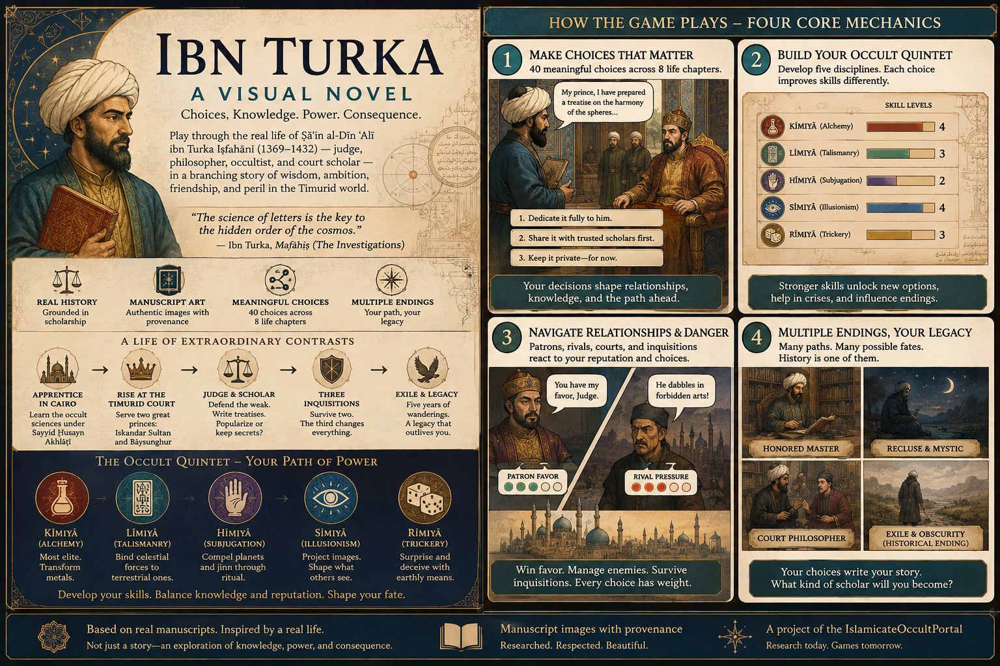
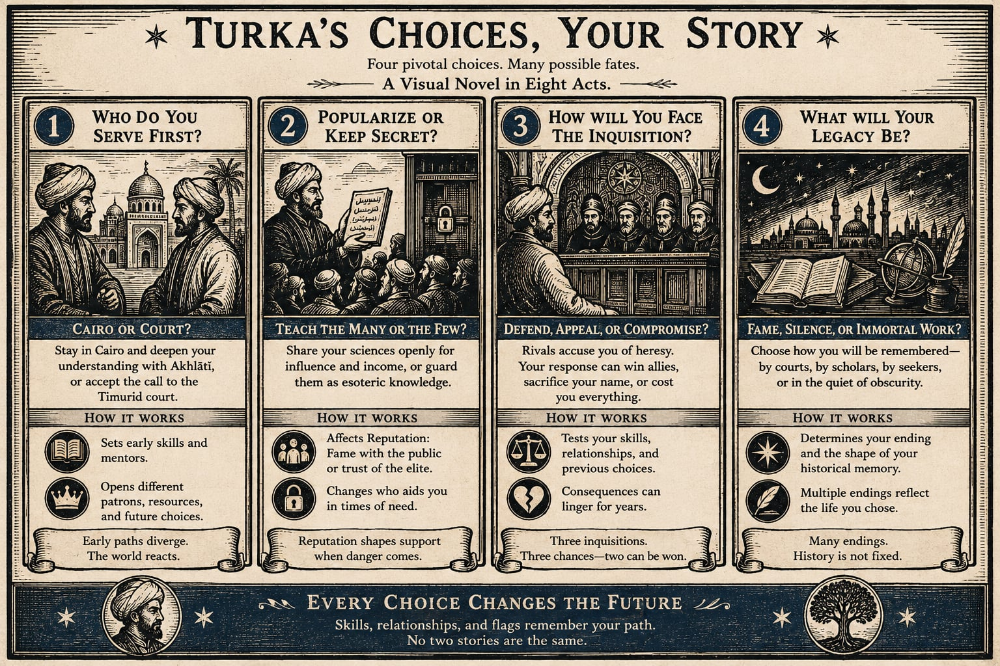

Ibn Turka: A Visual Novel
Choices. Knowledge. Power. Consequence.

Play through the real life of Ṣāʾin al-Dīn ʿAlī ibn Turka Iṣfahānī (1369–1432) — judge, philosopher, occultist, and court scholar — in a branching story of wisdom, ambition, friendship, and peril in the Timurid world. Not a fantasy skin over a generic RPG: every character, court, and occult science in this game is drawn from real manuscripts and real scholarship on the Islamicate occult sciences.
“The science of letters is the key to the hidden order of the cosmos.” — Ibn Turka, Mafāḥiṣ (The Investigations)
Four core mechanics
40 choices that matter
Every act of Ibn Turka's life — his formation in Cairo, two Timurid patrons, his career on the bench, three state inquisitions, five years of exile — unfolds as real decision points. Each is tagged for how grounded it is in the historical record: some are directly attested, some fill a genuine gap in the sources, a few are invented to give a scene its beat. Nothing pretends to be more historical than it is.
Build your Occult Quintet
Five real, period-named occult sciences — kīmiyā (alchemy), līmiyā (talismanry), hīmiyā (subjugation), sīmiyā (illusionism), rīmiyā (trickery) — already ordered in the source material from most elite and demanding to most accessible. Your choices invest in different sciences; your specialization opens different options, patrons, and outcomes later.
Navigate relationships & danger
Patrons, mentors, rivals, and companions remember what you did. Loyalty kept or spent early can open or close a door in the third act — a bond formed in Cairo can be the reason someone stands with you later, or the reason you have to choose whether to abandon them when the state comes looking.
Multiple endings, your legacy
The real Ibn Turka survived two inquisitions and lost the third — exile, then death in 1432. That outcome is one ending among several, not the privileged “true” path. Different choices produce genuinely different fates: vindicated martyr, quiet compromise, solitary sage, a legacy that outlives him or one that doesn't survive him at all.
The Occult Quintet — your path of power
Ordered exactly as the historical sources order them, from most elite and technically demanding to most accessible:
A life in eight acts
- Cairo & Formation — who do you study under, and how openly?
- First Patron: Iskandar Sultan — how much of your doctrine do you reveal to a prince?
- Second Patron: Bāysunghur — calligraphy, astronomy, or the bench?
- Choosing the Sciences — your Occult Quintet specialization begins here.
- Popularizer or Secret-Keeper — teach the many, or guard the few?
- The Bench: Judge of Isfahan — the powerful, or the weak?
- Three Inquisitions — survive two. The third changes everything.
- Exile & Legacy — what will outlive you, and how will you be remembered?

Concept art for the pitch — not final in-game art.
Built from real research, not fantasy
TurkaGame's world is drawn directly from scholarship on Ibn Turka and the Islamicate occult sciences — see the research brief for the full grounding. Manuscript and portrait imagery is sourced with explicit provenance from two companion research projects: the 40-choice narrative design itself, the IslamicateOccultPortal (a DH research portal on lettrism, the Brethren of Purity, and Ahmad al-Buni's talismanic corpus, with a 552-image research catalog), and OCCULTIMGDB, a public-domain image archive with 136 rights-cleared Islamicate manuscript images — including copies of al-Buni's own Shams al-Ma'arif and Persian astronomical and geomantic manuscripts — ready to illustrate the game's pages.
Status
In active development. Built so far: the full 40-choice narrative design, an Occult-Quintet skill-tree and flag-based state model, real scene prose and per-option reasoning for all 87 choice options, manuscript-backed visuals for every act, and computed endings with a personalized epilogue. Every scene is written to reveal something specific and real from the historical scholarship — a named text, institution, or practice — not generic occult-fantasy dressing (see the writing guide).
Play Version 3.0 →
— the current version: short, sharp per-option reasoning that names a
real person, text, or institution wherever the record allows it (see
the writing guide).
Version 2.0 — archived,
longer per-option reasoning (2–4 sentences).
Version 1.0 — the
original prototype, short choice labels only. All three stay playable for
comparison rather than being overwritten.